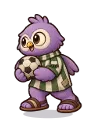

Wiki › Adversários › Mascote Perdido da Torre

Mascote Perdido da Torre
Nível 406 🗼 Torre Infinita
- Fôlego
- ❤️ 353.573
- Ataque
- ⚔️ 2.493
- XP
- ⭐ 152.309
- Tostões
- 🪙 6.545–9.817
- Chuta de longe
- não
- Vem te desafiar
- sim
O que deixa cair
| Item | QuantidadeQtd. | Chance | Raridade |
|---|---|---|---|
| 1 | 6,0% | Comum | |
| 1 | 6,0% | Raro | |
| 1 | 0,06% (1 em 1.667) | Épico | |
| 1 | 0,06% (1 em 1.667) | Épico |
Como ler: a % é a chance de cair em cada adversário vencido. Se você estiver muito acima do nível dele, a chance diminui (6 a 9 níveis acima: 80%; 10 a 14: 40%; 15 a 19: 15%; 20 ou mais: nada). Item pedido por uma missão que você aceitou cai com a chance cheia.
Onde aparece
- 🗼 Torre Infinita — andar 1 (nível 406) — em cima no mapa (norte) (3 no mapa)
🧭 Viagem: 🗼 No Multiverso, fale com a Mestra Altina (Torre Infinita).
🧭 Caminho: a viagem já deixa você lá.
O que ele diz
Cadê o meu time?
Abraço!
Eu só queria torcer...